Left: SVG rendered by moon_vegalite. Middle: the SVG produced by vega-lite 5.23.0 + vega 5.33.1 for the same specification.
Right: the same chart in the hand-drawn style (moon_rough, seed 7, coordinates rounded to 2 decimals), which equals what
vega-lite + vega + rough.js 4.6.6 give. Same specification and seed, same bytes.
Regenerate with node scripts/gen_gallery.mjs.
| Specification | moon_vegalite | vega (official) | hand-drawn (moon_rough) |
|---|---|---|---|
Bar chartbaridentical to vega output (ignoring accessibility attributes) hand-drawn: identical to vega-lite + rough.js | 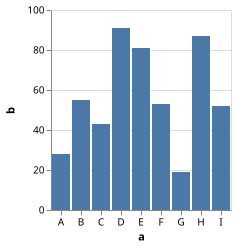 | 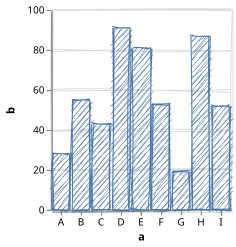 | |
Aggregated horizontal barsbar_aggregateidentical to vega output (ignoring accessibility attributes) hand-drawn: identical to vega-lite + rough.js | 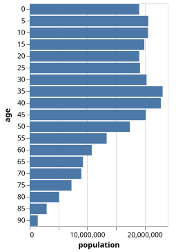 | 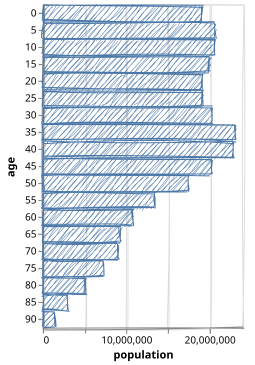 | |
Binned histogramhistogramidentical to vega output (ignoring accessibility attributes) hand-drawn: identical to vega-lite + rough.js | 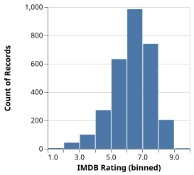 | 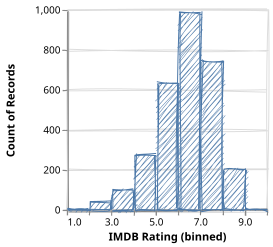 | |
Stacked bars with a colour legendstacked_bar_videntical to vega output (ignoring accessibility attributes) hand-drawn: identical to vega-lite + rough.js | 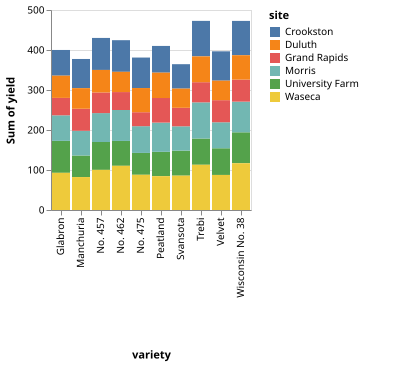 | 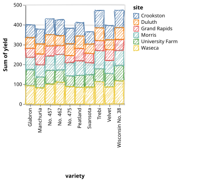 | |
Scatter plotpoint_2didentical to vega output (ignoring accessibility attributes) hand-drawn: identical to vega-lite + rough.js | 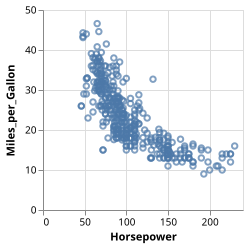 | 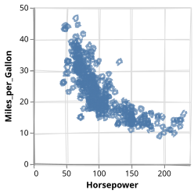 | |
Scatter plot with colour legendpoint_coloridentical to vega output (ignoring accessibility attributes) hand-drawn: identical to vega-lite + rough.js | 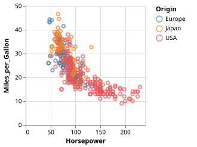 | 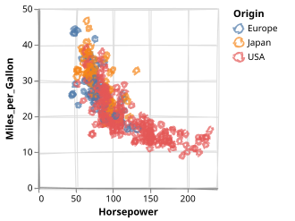 | |
Circlescircleidentical to vega output (ignoring accessibility attributes) hand-drawn: identical to vega-lite + rough.js | 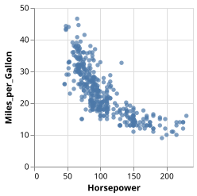 | 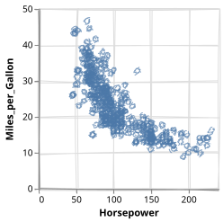 | |
Time series linelineidentical to vega output (ignoring accessibility attributes) hand-drawn: identical to vega-lite + rough.js | 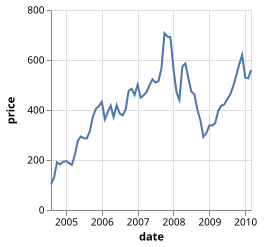 | 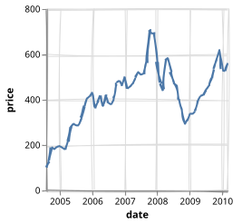 | |
Monotone line over a time unitline_monthidentical to vega output (ignoring accessibility attributes) hand-drawn: identical to vega-lite + rough.js | 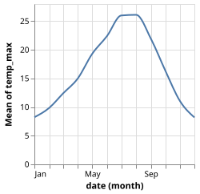 | 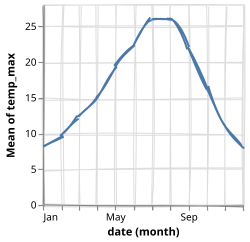 | |
Area chartareaidentical to vega output (ignoring accessibility attributes) hand-drawn: identical to vega-lite + rough.js | 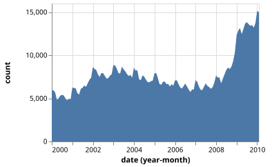 | 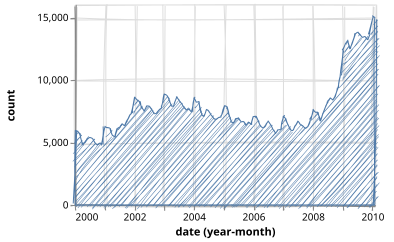 | |
Bars over a time unitbar_monthidentical to vega output (ignoring accessibility attributes) hand-drawn: identical to vega-lite + rough.js | 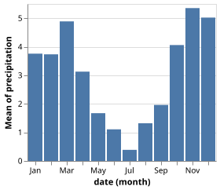 | 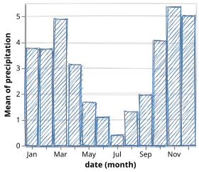 | |
Tick striptick_stripidentical to vega output (ignoring accessibility attributes) hand-drawn: identical to vega-lite + rough.js | 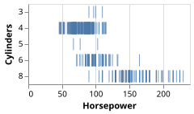 | 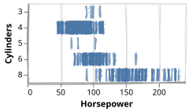 | |
Rule rangesrule_extentidentical to vega output (ignoring accessibility attributes) hand-drawn: identical to vega-lite + rough.js | 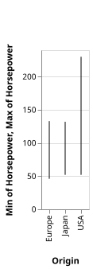 | 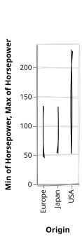 | |
Coloured text markstext_scatterplot_coloredidentical to vega output (ignoring accessibility attributes) hand-drawn: identical to vega-lite + rough.js | 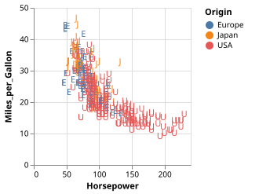 | 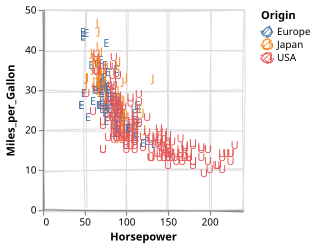 | |
Log scalepoint_logidentical to vega output (ignoring accessibility attributes) hand-drawn: identical to vega-lite + rough.js | 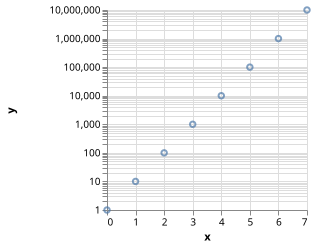 | 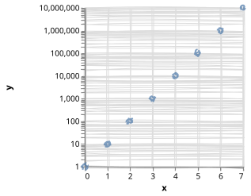 | |
Ordinal colourpoint_ordinal_coloridentical to vega output (ignoring accessibility attributes) hand-drawn: identical to vega-lite + rough.js | 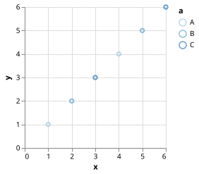 | 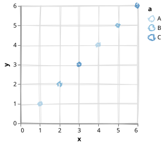 | |
Stacked area, ordinal colourstacked_area_ordinalidentical to vega output (ignoring accessibility attributes) hand-drawn: identical to vega-lite + rough.js | 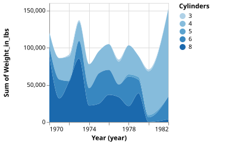 | 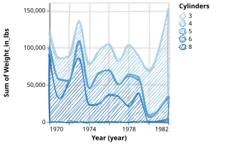 | |
Layers: bars and a linelayer_bar_lineidentical to vega output (ignoring accessibility attributes) hand-drawn: identical to vega-lite + rough.js | 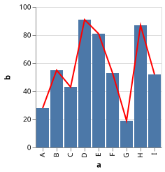 | 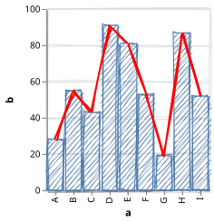 | |
Layers: shared binslayer_histogramidentical to vega output (ignoring accessibility attributes) hand-drawn: identical to vega-lite + rough.js | 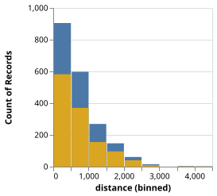 | 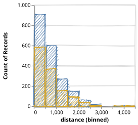 | |
Layers: histogram and a mean rulelayer_histogram_global_meanidentical to vega output (ignoring accessibility attributes) hand-drawn: identical to vega-lite + rough.js | 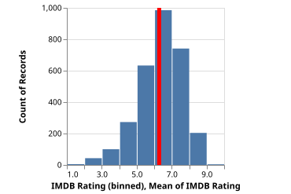 | 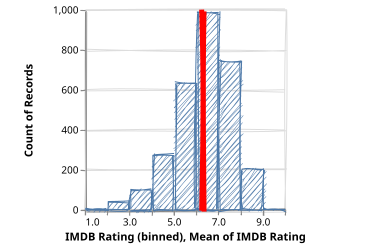 | |
Layers: a rect over the extentlayer_rect_extentidentical to vega output (ignoring accessibility attributes) hand-drawn: identical to vega-lite + rough.js | 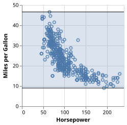 | 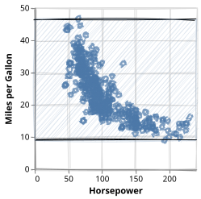 | |
Layers: annotated barslayer_bar_annotationsidentical to vega output (ignoring accessibility attributes) hand-drawn: identical to vega-lite + rough.js | 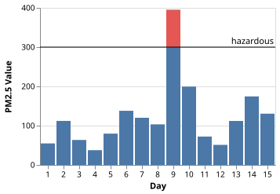 | 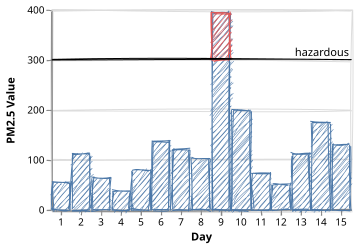 | |
Layers: a datum rulelayer_line_datum_ruleidentical to vega output (ignoring accessibility attributes) hand-drawn: identical to vega-lite + rough.js | 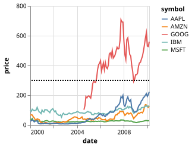 | 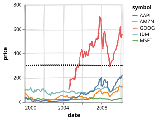 | |
Layers: legend on the leftlayer_color_legend_leftidentical to vega output (ignoring accessibility attributes) hand-drawn: identical to vega-lite + rough.js | 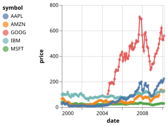 | 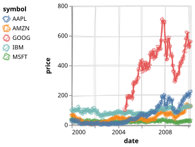 | |
Layers: independent legendslayer_circle_independent_coloridentical to vega output (ignoring accessibility attributes) hand-drawn: identical to vega-lite + rough.js | 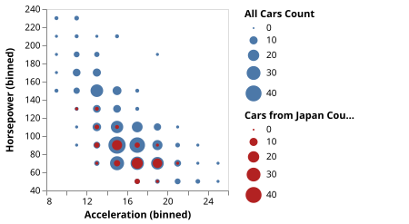 | 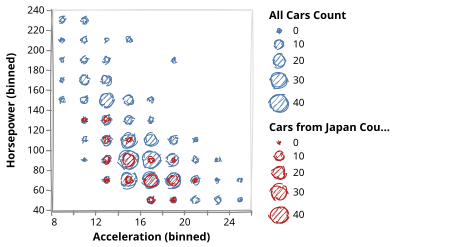 | |
MoonFrame-generated: barmoonframe_baridentical to vega output (ignoring accessibility attributes) hand-drawn: identical to vega-lite + rough.js | |||
MoonFrame-generated: bar_stackedmoonframe_bar_stackedidentical to vega output (ignoring accessibility attributes) hand-drawn: identical to vega-lite + rough.js | |||
MoonFrame-generated: point_colormoonframe_point_coloridentical to vega output (ignoring accessibility attributes) hand-drawn: identical to vega-lite + rough.js | |||
MoonFrame-generated: linemoonframe_lineidentical to vega output (ignoring accessibility attributes) hand-drawn: identical to vega-lite + rough.js | |||
MoonFrame-generated: bar_titledmoonframe_bar_titledidentical to vega output (ignoring accessibility attributes) hand-drawn: identical to vega-lite + rough.js |